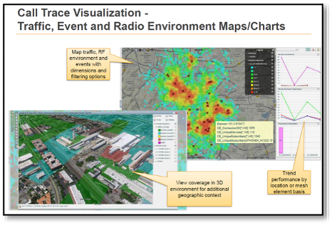
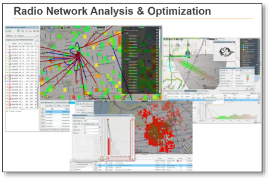
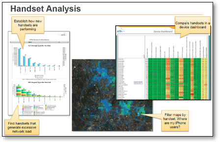
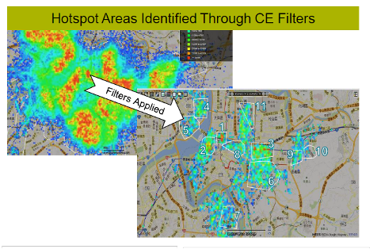

See network performance from the customer's location.
To improve network planning and optimization, Bell needed a more precise understanding of where customers were using the network and where customer-impacting issues were occurring. We evaluated multiple geolocation and performance-management platforms through a detailed proof of concept.
The evaluation combined network configuration, KPIs, RAN logs and traces to test each platform's ability to geolocate usage, identify customer-oriented problems and provide a richer view of Quality of Experience.
Lead the evaluation and implementation
I led the engineering team working on the initiative, defining technical and business requirements, evaluation criteria, required capabilities and the proof-of-concept framework. I also led feature and cost negotiations with the vendors and translated platform capabilities into practical use cases for network teams.
Agile from evaluation through deployment
We used an Agile approach during the evaluation and continued it after platform selection. Rather than waiting for every capability to be completed, we deployed incrementally so each sprint could add usable functionality and business value while the solution continued to evolve.
ActixOne integrated into the engineering ecosystem
ActixOne provided the strongest overall approach and aligned with existing benchmarking and drive-testing solutions. This integration improved efficiency and reduced the learning curve, while combining traditional KPIs and field measurements with geolocated network and customer information.
Built for broader analytics and process convergence
The roadmap expanded beyond initial geolocation into standardized dashboards and reporting, benchmarking, configuration and performance-management use cases, process automation, multi-vendor support, knowledge transfer and future big-data integration.
More targeted planning. Faster problem identification.
The successful deployment introduced a new dimension to how Bell could visualize customers and network behavior. Engineering teams gained a more precise way to identify hotspots and customer-impacting areas, enabling more targeted planning and faster investigation of network issues.
Designed to reduce operational effort.
The original business case identified potential efficiencies across troubleshooting, tool convergence, configuration management and drive testing. The internal analysis estimated cumulative OPEX benefits of approximately $6.16M by Year 3; this was a planning estimate, not a statement of realized savings.
For optimization drive testing specifically, the roadmap targeted a 50% reduction in requests by the end of 2016, with a longer-term objective of eliminating optimization-specific drive-test requests where geolocation analytics could replace them.
Project Capabilities




Customer context makes network data more actionable
The project reinforced the value of combining network performance data with geolocation and customer-experience context. The strongest analytics platforms do more than expose KPIs — they help engineering teams identify where customers are affected and translate that insight into targeted action.